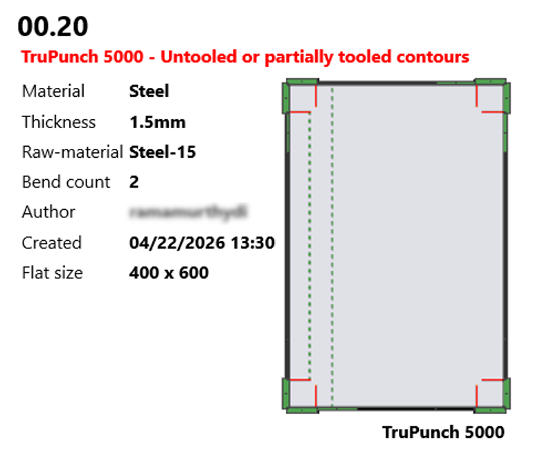

Notifications
通知は、システム内で発生するCADおよびツーリングエラーについてユーザーに通知します。問題が迅速に伝達され、適切な措置を講じることができるようにします。
Email notification
Email notification機能を使用すると、ユーザーはCADおよびツーリングエラーに対する自動メールアラートを設定および受信できます。設定が完了すると、関連するイベントが発生するたびに、システムが指定された受信者に自動的にメールを送信し、問題が迅速に対処されるようにします。
メール通知を設定するには、次の場所に移動します： ファクトリー > 設定 > 通知

*通知*ページは、以下のセクションで構成されています：
Notification settings
*通知設定*セクションは、メールアラートがどのように生成され、受信者に配信されるかを制御します。
-
Eメール通知を有効にする - 設定された条件に基づいて、システムが通知を送信できるようにします。
-
通知受信者 - 受信者のメールアドレスを指定します。複数の受信者をカンマ（
,）またはスペースで区切って追加できます。 -
メッセージをバッチで送信する - 複数の通知を1つのメールにまとめます。定義された時間間隔内に生成されたメッセージがグループ化され、メール量を削減し、混雑を防ぎます。

-
適用可能であればツーリングシミュレーションプレビューを添付します + - 利用可能な場合、ツーリングシミュレーションプレビューを通知メールに添付します。これは、メールから直接ツーリング関連の問題を確認するのに役立ちます。

| シミュレーションプレビューを含めると、メールのサイズが大幅に増加する可能性があります。 |
メール設定
*メール設定*セクションは、システムがメール通知を配信するために使用する送信メールサーバーの設定を定義します。これらの設定は、通知が正常に送信されるように正しく構成する必要があります。
-
SMTPサーバ - 送信メールの送信に使用されるSMTPサーバーアドレスを指定します（例：
smtp.gmail.com）。この情報は通常、ユーザーのメールクライアントのアカウントまたは設定セクションで入手できます。 -
SMTPポート - メールサーバーがインターネット経由でメールを送信するために使用するポート番号を定義します。一般的な値には、
465（SSL）と`587`（TLS）があります。 -
転送プロトコル - アプリケーションからメールサーバーにメールを安全に送信するために使用されるプロトコルを指定します（例：SSLまたはTLS）。
-
サーバで認証が必要 - SMTPサーバーの認証を有効にします。有効にすると、メールが送信される前に、ユーザー名とパスワードがサーバーによって検証されます。
-
ユーザー名 - SMTPサーバーで認証し、通知を送信するために使用されるメールアカウントを指定します。
-
パスワード - 認証に使用されるメールアカウントに関連付けられたパスワードを指定します。
-
Sender address - 通知が受信されたときに受信者に表示される送信者のメールアドレスを指定します。
-
テスト… - テストメールを送信して、メールサーバーの設定を確認します。
*テスト…*をクリックして、設定を検証します。テストが成功した場合は確認メッセージが表示されます。それ以外の場合は、失敗の原因を示すエラーメッセージが表示されます。
|